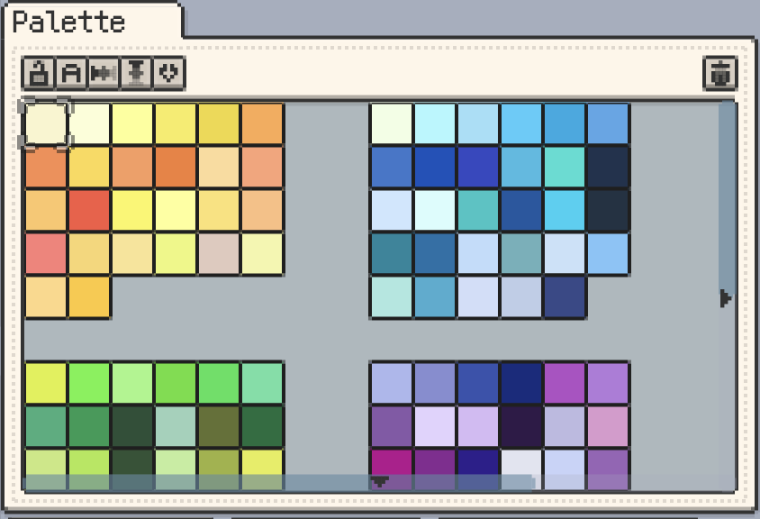
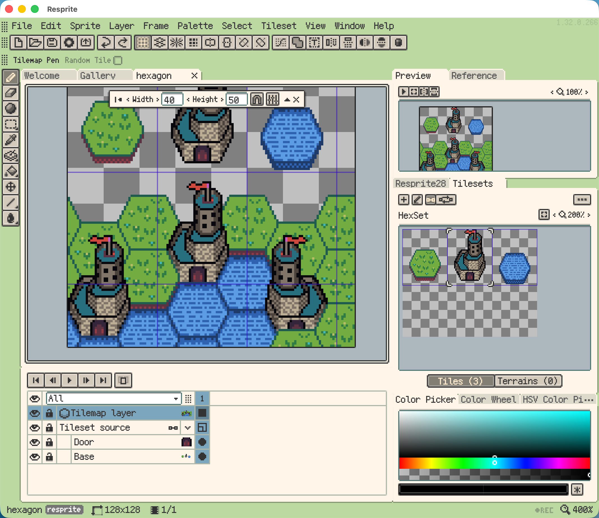

Resprite 全能力盘点：从像素点到关卡地图的一条管线
把 Resprite 的能力面完整铺开——绘制管线、调色板治理、瓦片地图、触控适配、导出生态，每一块都讲清楚解决什么问题、亮点在哪、什么场景用得上。
开头：Resprite 是什么，为什么值得认真盘点
Resprite 是一款跨平台的像素画创作工具——它的官网上明确列出了 Android、iOS 和桌面端三个版本。它不是那种"打开就能画几笔"的轻量涂鸦应用——Resprite 的设计思路是：从画第一颗像素点开始，到产出可以直接喂给游戏引擎的瓦片地图和精灵动画，整条链路都在一个工程里闭环。
市面上的像素画软件大致分两档：偏"画板"的类型专注绘制体验，偏"工具集"的类型覆盖动画和导出。Resprite 属于后者，而且它的工具集铺得相当完整——我用过它之后最直观的感受是：一个独立开发者从空白文档到关卡可玩，中间不需要频繁切换三四个不同软件。下面按能力域逐一盘点。
核心绘制：Pixel Perfect 原则贯穿所有工具
Resprite 的所有绘制工具都默认开启 Pixel Perfect，这意味着矩形、椭圆、直线的边缘永远对齐像素网格，不会出现半像素模糊的情况。这个细节对像素画来说不是"锦上添花"——想象一下你花两小时画好的角色轮廓，因为一条半像素的线在缩放后变得毛糙，返工成本极高。
形状工具组的设计值得单独说一下。矩形、椭圆、直线各支持实心填充或只画轮廓，轮廓线宽可调。桌面端按住 Shift 可以画正方形、正圆、45° 倍数的直线，iOS 端则通过手势停一下触发对齐辅助线——不同平台各有各的适配方式，不是粗暴复制粘贴。画 UI 按钮外框、等距建筑外墙、点状背景装饰，这些场景用形状工具比铅笔逐像素描线快得多。
形状画出来之后还能跟选区工具配合——在选区里描边（Stroke Selection），对"画一条 3 像素宽的精确矩形边"这类需求来说，比自己数着像素描效率高太多。

调色板治理：不只是存颜色，是建立配色语言
对像素画来说，调色板的管理往往比"从色盘上随便选个颜色"重要得多。Resprite 在这一块的设计相当认真。
基础操作之外，Resprite 提供了几个实用管理功能。锁定调色板——一旦调好一套色板就锁定它，防止误触删色或重排。显示颜色名称——给每个色块起名字（比如 "Shadow Green"、"Base Red"），团队协作或整理复杂项目时特别有用。调色板本身也可以命名，和 .resprite 工程文件一起保存，一个项目多套调色板分开管理。
动作栏里还有横向插值和纵向插值的快捷入口——选定两个颜色，一键生成中间色渐变。我见过一个推荐的工作习惯：画新项目前先花 5 分钟整理调色板——确定主色调的 5~8 种渐变，加基础明暗色（黑、白、两档灰），再加特殊用途色（UI 按钮色、皮肤色），然后锁定调色板开始画。这样整个项目的色调天然统一，也不会在绘制中途分心去找颜色。
瓦片地图全链路：从画瓦片集到导出 Tiled
这是 Resprite 和其他像素画软件拉开差距的核心能力域之一。Resprite 支持矩形、等距菱形、两种六边形四种网格类型的瓦片地图画布，可以在上面直接画瓦片集、布置地形、定义瓦片动画。
Resprite 从 v1.32.0 开始支持导出 Tiled 格式（版本更新细节可以查resprite文档）——点击菜单里的「导出 Tiled 地图」，会生成一个 ZIP 包，内含 .tmx 地图文件、.tsx 瓦片集文件和瓦片集 PNG 图片。解压后用 Tiled 打开 .tmx 就能继续编辑关卡。四种网格类型会自动映射到 Tiled 对应的 .tmx 结构：矩形 → Orthogonal，等距 → Isometric，Edge-to-edge 六边形 → Hexagonal staggered，Pointy-top 六边形 → Hexagonal pointy-top，不需要手动配置。
如果一个 Resprite 文档里同时有不同网格类型的瓦片图层——比如一层矩形地面加一层六边形装饰——导出时会拆成多个 .tmx，因为 Tiled 不支持混排。瓦片动画（水面波纹、火苗跳动那种单瓦片循环）也会保留在 .tsx 里，Tiled 可以直接播放。Resprite 里给瓦片设置的自定义元数据（"这个瓦片是草地类型、碰撞为 Yes"）也能原样导出，Tiled 和游戏引擎可以读取这些元数据做碰撞检测或脚本触发。

反过来，Resprite 也支持导入 .tmx / .tsx，形成一个可以来回迭代的闭环。对独立游戏开发者来说，这个工作流的意义很大——一人兼顾瓦片美术和关卡设计时，Resprite 负责瓦片美术和初版地图，Tiled 负责关卡设计和元数据，中间的文件格式打通了就省很多事。
移动端触控深度适配：Pencil 与手指的完美分工
Resprite 的 iOS 版可能是目前对 Apple Pencil 适配做得最认真的像素画软件。它不是把桌面 UI 拉伸到触屏上，而是从一开始就围绕"一只手写 Pencil，一只手操作手势"来设计。
分工表很清晰：绘制像素用 Pencil，手指负责填充、切换工具、缩放画布、平移画布——Pencil 一直在画，不用停笔就能用手指快速取色或切工具，回来继续画。压力感应方面，铅笔工具的笔迹粗细会随压力变化（轻画 1 像素细线、重压较粗线条），橡皮擦的擦除范围也响应压力。倾角感应可以实现斜头笔刷的方向性笔触。
径向菜单（Radial Menu）是 iOS 版的一个独有效率设计——用 Pencil 长按画布某个位置，会弹出一个围绕该点的环形菜单，里面是高频操作（切工具、调笔刷大小、选颜色、开关洋葱皮）。手不用离开画布就能调整，不用跑去点顶部工具栏。菜单内容可以自定义，把自己最常用的操作放进去。
手势系统也很完整：双指捏合缩放、双指旋转（可选）、单指拖动平移、长按取色、单指左右拖切换帧、单指上下拖切换洋葱皮层——整套手势下来，除了绘制本身，其他操作都不需要用到 Pencil。
输出格式生态：不止像素图
Resprite 的导出能力相当丰富，除了刚才说的 Tiled，还支持 GIF / APNG 动画序列、视频格式、PSD（可以保留图层）、SpriteSheet（精灵图集）、Bead 串珠模板、Cursor 光标热区设置——基本上覆盖了像素创作者会需要的大多数输出场景。
一个容易被忽略的细节是 Resprite 的导出可以按图层分离——把每个图层单独导出成一张图，方便后期在其他软件里组合使用。对需要做素材拆分的场景来说很实用。如果你想试试 Resprite 自己，安装包从官方下载获取，三个平台都覆盖。
短板也要说
公平起见，客观讲几个我觉得 Resprite 目前还不够理想的地方。
第一，桌面端的触控体验不如 iOS 精致。Android 版的触控手势和 Pencil 适配虽然在持续完善，但相比 iOS 端的深度优化还是有差距。如果你主要在 iPad 上工作，Resprite 的体验会比 Android 或 Windows 平板上明显好一些。
第二，Tiled 互通有边界。Resprite 特有的某些高级元数据导出 .tmx 后可能无法 100% 反向导回 Resprite，所以 .resprite 工程文件一定要保留作为源文件。反过来，Tiled 独有的功能——对象层、碰撞形状、自定义属性面板——Resprite 目前还不支持，这些只能在 Tiled 里操作。
第三，Windows 桌面端的某些高级功能迭代速度略慢，某些最新特性可能先在 iOS R 版本上线再下放到桌面。如果你强依赖某个新特性，最好先确认支持平台再决定。
什么样的人该用它
盘点完能力面之后，总结一下什么样的人会真正从 Resprite 里受益：
独立游戏开发者，一人兼顾瓦片美术和关卡设计。 Resprite 的瓦片集 → Tiled 地图这条管线打通之后，你不需要在 Aseprite 画瓦片、再切到 Tiled 拼地图、再切到 Unity 调资源——至少瓦片和关卡这两块可以大部分留在 Resprite 里闭环完成，省下来的时间和上下文切换成本相当可观。
像素风格插画师，追求精确控制每一个像素。 Resprite 的 Pixel Perfect 默认开启、形状工具与选区配合、调色板锁定命名、洋葱皮（Onion Skin）动画预览——这些都是画精细像素插画时的高频刚需，Resprite 把它们都做得很顺手。iPad + Apple Pencil 的组合尤其推荐，压力感应和径向菜单能让绘制过程非常流畅。
桌游或实体 Bead 串珠爱好者。 Resprite 的 Bead 导出模板功能可以把像素设计稿直接转换成串珠用的点阵图，自动标注每颗珠子的颜色和坐标，相当于软件帮你做了从"数字设计"到"实体材料"的翻译。对喜欢做手工的像素创作者来说，这是一个独特的加分项。
Resprite 的设计哲学很明确：它不想成为功能堆砌的画板，而是想做一条从"第一个像素点"到"可以投入生产的素材"的完整管线。这套思路对独立开发者和认真的像素画创作者来说，比单独每个工具做得"再好一点"更有价值——时间省下来了，上下文切换少了，工程文件只有一份。如果你需要参照完整的示例项目或想参与改进文档，这套资料在 GitHub、Gitee 和 GitCode 上都有同步可查。如果你还在像素画 + 关卡设计之间反复切软件，不妨试试看 Resprite 能帮你省多少事。